Soundwave
w/ Ratbat, Slugfest, & Solarbot vs. Autobot Blaster w/ Ramhorn &
Rewind (Shattered Glass) [Transformers Club/eHobby 2013 Shared Exclusive]
Soundwave
w/ Ratbat, Slugfest, & Solarbot vs. Autobot Blaster w/ Ramhorn &
Rewind (Shattered Glass) [Transformers Club/eHobby 2013 Shared Exclusive]
Set Price
: $195 (U.S)
(NOTE: Because this is set consists mostly
of redecoes, this is not a full-blown review. This mainly covers any changes
made to the set and the color scheme, and merely compares it to the previous
iterations of these molds. For a review on the original versions of G1
Autobot Blaster, Ramhorn and Eject (which is used for both Rewind and Solarbot)
go
here
. For a review on the original version
of G1 Soundwave, go
here
.)
Autobot
Blaster (SG)
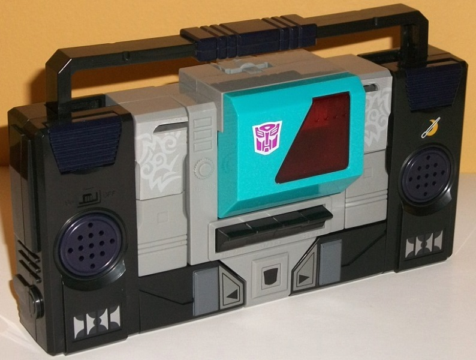
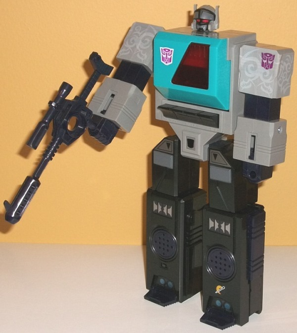
Allegiance
: Autobot (Shattered Glass)
Difficulty of Transformation
: Easy
Color Scheme:
Black, moderately
light flat gray, and some moderately dark gray, light gray, transparent
dark red, very dark bluish purple, red, and flat light blue
Individual Rating
: 6.5
Blaster certainly goes
for a duller, darker color scheme than his somewhat brightly-colored original
version, with his evil Shattered Glass persona being mostly a couple hues
of gray and black. That by itself would be a pretty boring color scheme,
but it's the accent colors and HOW those colors are used that makes Blaster's
color scheme interesting. The gray that is used for most of his main body
and arms is actually NOT the usual blah light gray, but a rather flat,
moderately light version of the color. Now, that's not exactly EXCITING,
but it does look better and more fitting for a boombox than a milky gray.
There's also stickers you put on his shoulders that-- though they sadly
cover up existing paint details-- help emulate the "tribal tattos" SG Blaster
has been shown to have in fiction. They're a light gray just a shade or
two lighter than the gray plastic around them, so I wish they stood out
more, but they DO look pretty cool, and help give Blaster a bit more individuality.
Being that they're stickers, though, it's a bit difficult to get them on
JUST right where they don't get "folded" slightly around the little sliding
bits on his shoulders involved in transformation, which is a minor eyesore.
On his black legs, there's a good amount of silver and moderately dark
gray details, as well as a very dark bluish purple plastic used not only
on his speakers, handle, and a few other minor details, but on his robot
fists and gun too. It's a pretty nice color, though like with the grays,
I wish it was just a TAD lighter to provide more contrast and so it could
stand out from the black a little more. The flat light blue color on the
chest is the most eye-catching of his colors, and really helps make this
a "cool" color scheme, complementing the dark bluish purple fairly well.
It's quite a striking color, to the point that I wish it was used a little
more on Blaster. Blaster's gray head is also wonderfully detailed with
paint-- he's got some black on the front portion of his head, red eyes,
and some moderately dark gray on his forehead and around his mouth. It's
a pretty good "evil" color combo. Additionally, Blaster has a few extra
stickers-- like an extra SG Autobot symbol, and a cool "moon symbol w/
microphone" sticker-- that you can place anywhere on his body; there's
no "recommended" area.
No mold changes have
been made to SG Blaster.
Autobot
Rewind (SG)
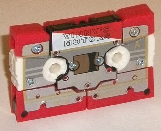
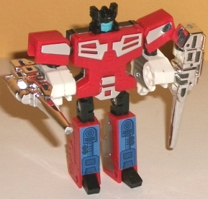
Allegiance
: Autobot (Shattered Glass)
Difficulty of Transformation
: Very
Easy
Color Scheme
: Red, white, silver,
chrome silver, and some black, light pale blue, dark flat brown, perwinkle,
and light metallic pale gold
Individual Rating
: 7.5
"Evil" Rewind here has
a mostly red and white color scheme, with the white mostly on his arms.
Chrome silver is used on the usual parts of this toy that are chromed--
i.e., the weapons and some parts of the shoulders and main robot body.
It's a pretty solid basic color scheme, though a bit "good Autobot-y" for
a Shattered Glass evil Autobot. Apparently SG Rewind's color scheme is
an homage to an unreleased G2 Go-Bot, Rumble. (And since there's the whole
Rumble/Frenzy vs. Rewind/Eject thing going on, it makes sense in an obscure
sort of way.) Some of Rewind's minor bits like his feet and head are black,
and provide a nice contrast against his main colors, and I LOVE the light
pale blue on Rewind's face, which helps tie him in color-wise to his boss
Blaster. His cassette mode has an impressive amount of paint detail, with
silver outlined with pale gold covering almost the entire mode, and with
some black and dark flat brown detailing in the center to emulate the tape
"reels". There's also a nice striped pattern here, and some measurement
lines and "METAL POSITION" are written in gold, though it's difficult to
pick out against the silver paint. For (optional) stickers, Rewind has
a "Vinny's Motors" red-and-white sticker applied near the top of his cassette
mode, along with some nice perwinkle stickers on his lower robot legs--
both call back to G2 Go-Bot Rumble, who had a similar "Vinny's Motors"
emblem and leg details.
No mold changes have
been made to SG Rewind.
Ramhorn
(SG)
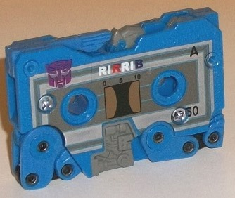
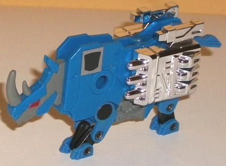
Allegiance
: Autobot (Shattered Glass)
Difficulty of Transformation
: Very
Easy
Color Scheme
: Periwinkle, light
flat gray, silver, dark metallic gunmetal gray, chrome silver, and some
red, metallic teal, black, and dark flat brown
Individual Rating
: 6.3
The Shattered Glass version
of Ramhorn is pretty much a reverse color-swap, with his color no longer
being a rusty red but rather a cool perwinkle. I quite like this main color,
as it not only attracts the eye, but it-- along with the light flat gray
paint on his head and mechanical details on his stomach-- ties him in as
another of Blaster's evil minions. Both colors also go together and contrast
against each other fairly well. As is usually the case, much of Ramhorn's
paint is on the front of his cassette mode, which has silver rectangular
stripes around a dark gunmetal outer stripe and a rectangular box nearer
to the "core" of the cassette. The gunmetal gray bits are bordered by a
very nice metallic teal color, which obviously complements the perwinkle
plastic well. Like with Rewind, he has black and dark flat brown paint
near the center to simulate the "spools" of tape inside-- all in all, it's
an impressive amount of detail that looks great. Additionally, he has the
usual chrome silver on his missile pack weapons. There's also a little
black on some connector points on the legs, and some nice red paint on
the eyes, but they don't contribute to the color scheme much. In terms
of stickers, Ramhorn has a "RIRRIB" sticker, a nice riff on the classic
"RIRFIB/RIBFIR" debate (Rumble is Red/Frenzy is Blue or visa versa) by
saying that "Rewind is Red, Ramhorn is Blue", a nice little in-joke. He
also has a sticker of mechanical detail that can be put on the blank side
of his main body, which is a way of making more clear his homage-- apparently
he's an homage to Rumble from the IDW movieverse comics, which... I still
would never have gotten if the TFWiki hadn't mentioned it. It's kind of
a stretch, but it's a good color scheme, so whatever. (On an outside note,
I didn't put this sticker on my copy as I didn't feel it "fit" with the
rest of him-- so it's not in the images above.)
No mold changes have
been made to SG Ramhorn.
Ratbat
(SG)
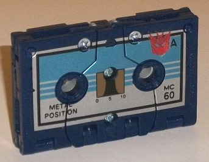
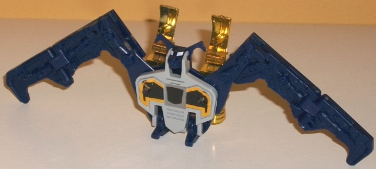
Allegiance
: Decepticon (Shattered
Glass)
Difficulty of Transformation
: Very
Easy
Color Scheme
: Dark navy blue, light
glossy gray, silver, light metallic silvery blue, chrome gold, and some
black, dark flat brown, white, and dull yellow
Individual Rating
: 7.6
Shattered Glass Ratbat
is, of course, not a new mold, but given that I've never reviewed the G1
Ratbat mold, I'll essentially be treating this toy as a new mold for the
purposes of this review. Ratbat's cassette mode is SOLID, with only some
folds on the sides and a few cracks even giving one the hint that it's
not an actual mini-cassette (well, as long as you don't look at it from
the backside, but this applies for all the cassette tape minions). Ratbat's
main color is a very dark navy blue, and the silver and light metallic
silvery blue lines really contrast against and complement the dark blue
quite well. There's also some black lines around the tape reels and on
some other minor outlines and details. Like the other cassettes in this
set, Ratbat has black and dark flat brown in the center of this mode to
simulate you being able to see the actual "tape" inside.
To transform Ratbat
to bat mode, you basically unfold the sides of the cassette tape mode,
as well as the tiny legs and ears from the side, as well as push up on
his small head. The legs are a bit pathetically small even for a bat--
they're basically just his feet-- but all things considered (especially
for a rather 2-D G1 cassette toy) Ratbat looks pretty good in beast mode,
with his proportions somewhat on point. (His wings could stand to be wider/bigger,
but they're not annoyingly small.) Although his cassette tape mode was
rather free of mold detailing, in bat mode Ratbat has a pretty impressive
amount of detailing here for a G1 toy, with hinges, pistons, and the like
all molded quite well into his wings. His main body, however, is relatively
free of the stuff, with only a few basic details. I wish his wings had
some paint detailing to bring out all those details, but the glossy gray
works well on the main body as a contrast color (thank goodness it's not
the bland light milky shade of this color), and the white eyes really contrast
well against the dark blue. For stickers, beyond a Shattered Glass Decepticon
symbol, Ratbat also comes with two yellow-and-black stickers for his chest
to both mix up the color scheme a bit more and make it obvious that SG
Ratbat is essentially Batman (he even goes by "Bat-Bot" publically and
has an alter-ego). It's a fun identity for this "polar opposite" of the
original devious Ratbat, and the color scheme certainly works better for
a bat than Ratbat's default pinkish purple. Unfortunately-- and this is
a rather big unfortunately-- there aren't holes in the chest stickers,
and there NEEDS to be to store SG Ratbat in a cassette tape holder or in
Soundwave, so you kind of have to "punch" your own holes, which can wrinkle
the stickers a bit. That was a big oversight, there. As with the other
cassettes, Ratbat has two weapons that can be plugged into the two holes
in his body to form a sort of dual-cannon backpack. The chrome gold on
the back cannons looks pretty good and is another neat contrast color,
but there's odd pointy peg-like protrusions below the main cannons that
look sort of odd, since they don't actually peg into anything. For articulation,
Ratbat can move side-to-side at the wings at two points, back-and-forth
slightly at the midpoint on each wing, and up-and-down slightly at the
neck, each foot and each ear (though the ears are VERY loose and tiny pieces,
to the point where I worry about easily losing them-- it's also hard to
get them to stay straight and symmetrical). In case you haven't been keeping
track, that's pretty darned good for a G1 cassette toy.
No mold changes have
been made to SG Ratbat when compared with the original.
Solarbot
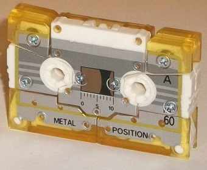
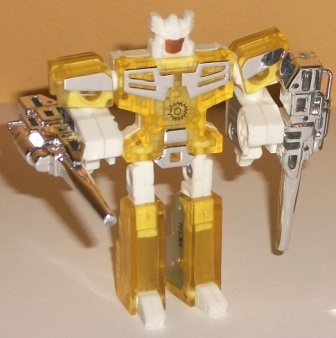
Allegiance
: N/A
Difficulty of Transformation
: Very
Easy
Color Scheme
: White, transparent
sunny yellow, chrome silver, silver, and some black, dark flat brown, metallic
bright yellow, metallic gold, and moderately dark silver
Individual Rating
: 7.2
Solarbot is another redeco
of the G1 Eject/Rewind mold-- apparently a toy called "Solarbot" was teased
on some early G2 packaging, but it was removed for the "final sales" versions
and it was otherwise not known what it would have looked like. This is
the Club's take on it-- he's basically the "prize" the two teams are fighting
over in this set. His color scheme is very much based on being "solar",
with white and a transparent golden "sunny" yellow both being his main
colors. Both colors complement each other exceedingly well, and really
help emphasize his properties. Plus, the transparent plastic on the body
looks cool, what with being able to see the "inner parts", especially since
most of them are white. Like with Rewind, Solarbot has some silver chrome
on his weapons, shoulders, and main body. For his cassette mode, he's got
silver outlining with some darker silver paint nearer to the center of
the mode, and-- like the other cassettes in this set-- some black and dark
flat brown in the center to make it look like you can see the recording
tape inside. He's also got some really neat metallic bright yellow lines
around the silver paint portions of the cassette mode, which really looks
stunning to the point where I wish it was used more on this guy. As one
last color, Solarbot has some metallic gold on his visor and faceplate
in robot mode. For stickers, Solarbot just has one small one-- a little
transparent "sunburst" symbol you can put pretty anywhere you want to.
No mold changes have
been made to Solarbot when compared to Rewind/Eject.
Soundwave
(SG)
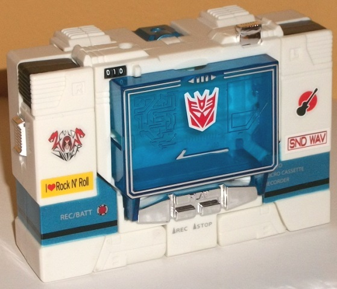
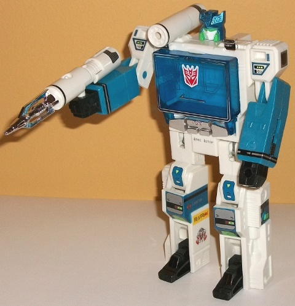
Allegiance
: Decepticon (Shattered
Glass)
Difficulty of Transformation
: Easy
Color Scheme
: White, moderately
light milky blue, dark transparent blue, and some chrome silver, silver,
moderately light metallic blue, black, and moderately light green
Individual Rating
: 8.5
Soundwave is the only
SG character in this pack that has had a previous toy-- and like that
BotCon
2012 exclusive
, his color scheme is loosely based off a white "Music
Label" music player Soundwave Takara released a while back. Thus, he's
mostly white, though blue is a secondary color. He's got three different
shades of blue-- a dark shade used for his transparent chest/tape deck,
a milky moderately light version of the color used for his lower arms,
and a rather nice metallic shade of that same color used on his head and
the tampoed details on his legs. All three shades look good, and complement
each other somewhat nicely. Beyond the basic blues and whites, there's
also a bit of chrome silver on the buttons, around the "rim" of the chest,
and on his missiles. He's also got some black here and there, particularly
on his feet and hands. Soundwave has an impressive amount of G1-esque tampoed
detail-- from the silver, red, black, blue, and green paint apps on his
knees, to the black-and-blue details on his shoulders, to the silver-and-black
details on his weapons and upper right side of the chest, it all looks
quite good and breaks up the white and blue pretty well so there's not
one overly large area of any one color. The light green and metallic blue
go together particularly nicely, especially on the knees but also on his
head, where they contrast and complement each other pretty nicely and help
to differentiate Soundwave's face from his normal G1 coloration. (That
said, I'm not a fan of the white faceplate.) For stickers, SG Soundwave
has a SG Decepticon symbol, as well as stickers of "I heart Rock N' Roll",
"SND WAV", a black guitar against a red circular background, and a stylized
"Cold Slither" band symbol-- all of which were on his BotCon 2012 exclusive,
and which can be placed anywhere you want on the figure (or not), with
no "set position" for any of them. (The pictures above are just where I
put them on mine.) Soundwave also comes with a long green band sticker
that can be wrapped around his head, but it's a
sticker
, so you
can't just take it off-- and transforming him to cassette player mode damages
it, so this sticker was pretty ill-conceived. Mine soon broke, which is
why it isn't in the pics above-- a real shame, since it's practically SG
Soundwave's trademark "thing".
No mold changes have
been made to SG Soundwave when compared with its original reissue.
Slugfest
(SG)
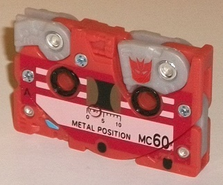

Allegiance
: Decepticon (Shattered
Glass)
Difficulty of Transformation
: Very
Easy
Color Scheme
: Light pale reddish
orange, light milky gray, dark red, and some light pinkish red, black,
dark flat brown, light blue, and chrome copper
Individual Rating
: 5.9
Like Ratbat, Slugfest
isn't a new mold, but he's the first time I've reviewed this mold on this
site, so I'm treating this like a full review. In cassette mode, Slugfest
looks slightly above-average for your G1 Cassettebot, with the square shape
pretty well-accounted for. The dino legs are the really telling bits, and
that's mostly only because they're of a different color and thus stick
out realy easily; if they had been the same color as most of the rest of
Slugfest, they'd barely be noticeable. Slugfest's head is also partially
visible, especially with the blue eyes, in the lower right-hand of this
mode. It's also a bit skinnier than the rest of this mode, so it sticks
out a bit in that manner, as well. The rest of this mode is pretty solid
construction-wise. SG Slugfest's color scheme is mostly a fairly nice "tomato-y"
pale reddish orange, with a bit of light milky gray on the legs. Unfortunately
it's that very bland milky shade of gray, and it does stick out as I already
mentioned, but at least it... well, I can't come up with other any positives
besides contrast, really. As with most Club exclusives, Slugfest has an
impressive amount of paint, with dark red surrounding most of the "core"
of his cassette tape mode, with light pinkish red stripes closer to the
center-- both colors contrast and complement each other (and the reddish
orange plastic) fairly well. There's also some black around the circles,
some lettering, and some black and dark flat brown paint apps near the
center to make it look like you can see Slugfest's "tape reels". Unlike
with the other color schemes in this set, SG Slugfest's color scheme doesn't
appear to be an homage to anything in particular, it's just a more "Autobot-y"
good guy color scheme than his original sickly green.
Slugfest's transformation
is very straightforward and simply consists of unfolding his beast parts
out from the sides of the tape mode, but a nice surprise is that little
stegosaurus plates (unfortunately of that light milky shade) pop up on
a spring once you unfold both Slugfest's head and tail. In stegosaurus
mode one has to, of course, take into account that it's a G1 toy and a
cassette tape toy, so he's pretty 2-D. That said, from the "preferred"
view it looks pretty good proportionally, with his plates being a bit small
and his tail a bit too short and stubby, but otherwise he's fairly proportional.
From the side with all his cassette mode paint apps he looks pretty nice,
but his other side is rather plain, with no paint apps visible at all except
for his blue eyes (which really contrast well with the orangish-red-- I
wish that paint was used a little more). Beyond a SG Decepticon symbol,
he only has two small stickers that really don't help vary up his colors,
either-- he has a yellow "DINOCON" sticker to distinguish him from a DinoBOT,
and he also comes with a little yellow-and-green restrainer bolt sticker
as well. Nice touches, but again, they don't exactly cover up much real
estate. Although his detailing is a little simplistic by modern standards,
he's fairly detailed by G1 standards, with a pretty good amount of metallic
plating and mechanical bits detailed on his "plain side" and stomach, as
well as on his legs. Slugfest also has two big chrome copper hip-mounted
guns that can be plugged in in this mode-- they look pretty good and complement
his main color well, but like with the other G1 cassette-bots his weapons
can't be stored in tape mode. He can move up-and-down at the head and tail,
as well as back-and-forth at both pairs of legs (as one, each pair is one
piece).
No mold changes have
been made to SG Slugfest when compared with the original.
The SG Soundwave vs.
SG Blaster set is a pretty awesome addition to the collection for those
who can't get enough of the G1 cassette players and cassette minions, AND
who have the spare change to be shopping for Transformers Club-priced exclusives,
as it IS a fairly expensive set (though not outrageously so-- it DOES come
with a lot). Of course, be aware that you're buying G1 molds and thus their
proportions and articulation aren't up to modern standards for the most
part, so if you only deal with modern molds this set is obviously not worth
your consideration. However, even if you have the previous versions of
these molds, the color schemes and details on these guys are pretty good
and quite different (and in most cases superior) when compared to the originals,
and worth your money-- again, assuming you fit the criteria mentioned above.
Reviews by Beastbot
Back to BotCon/OTFCC
Exclusives Index